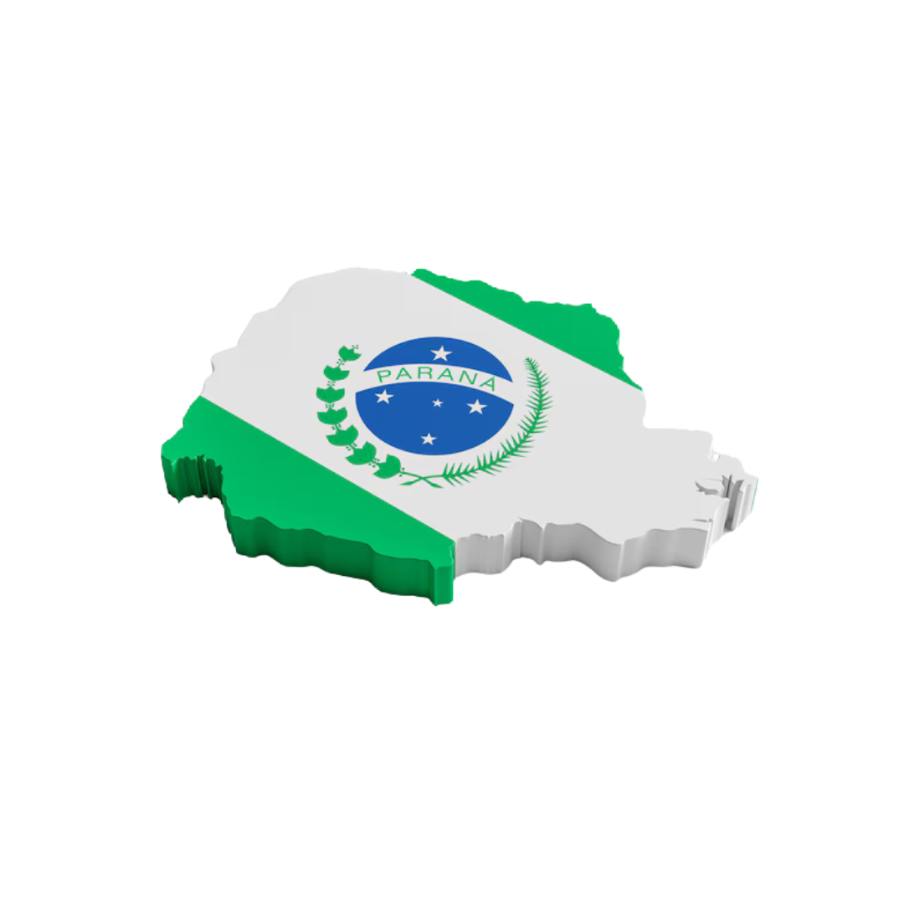

Na região norte do Paraná, destacam-se a produção de café, morangos, quiabos e avicultura. Além disso, o Norte tem uma grande produção de cana-de-açúcar, que alimenta a indústria sucroalcooleira, muito presente na região. A cidade de Londrina e Maringá têm os maiores pólos urbanos do Norte, sendo importantes centros comerciais e industriais, especialmente nos ramos de alimentos, vestuário e móveis.
Cana-de-açúcar: 1,5 a 2 milhões de toneladas por ano.
Voltado para a indústria, especialmente a metalúrgica, de móveis e de papel e celulose. Cidades como Ponta Grossa e União da Vitória são polos industriais. A produção agropecuária também é destaque, com carne bovina, leite e derivados, além da agricultura familiar. O turismo tem papel importante na economia, com destaque para áreas de ecoturismo, como o Parque Nacional de Superagüi e as Cataratas do Iguaçu. O Porto de Paranaguá é essencial para as exportações do estado.
Carne Bovina: 1,5 a 2 milhões de toneladas por ano;
Leite e Derivados: 4 a 5 bilhões de litros por ano.
Abrange Curitiba e seu entorno, principal centro econômico do estado. Destaque para a indústria de automóveis, metalurgia, plásticos e têxteis, com empresas como Renault e Volkswagen. Polo de tecnologia, pesquisa e inovação, com várias instituições de ensino superior.
Indústria Automobilística: cerca de 900.000 unidades fabricadas em 2023;
Metalurgia: 3 milhões de toneladas de aço por ano;
Vestuário: 50 milhões de peças de roupas, representando 10 a 15% da produção nacional.
Destaque para a produção agrícola: soja, milho, trigo, além da criação de suínos e aves. A agricultura irrigada é forte, especialmente na produção de hortaliças. A região é uma das maiores exportadoras de grãos do estado. Cascavel e Toledo são importantes centros urbanos com presença marcante no agronegócio. A proximidade com Paraguai e Argentina favorece o comércio internacional.
Soja: 3 a 4 milhões de toneladas por ano;
Milho: 10 milhões de toneladas por ano;
Trigo: 4 milhões de toneladas por ano.